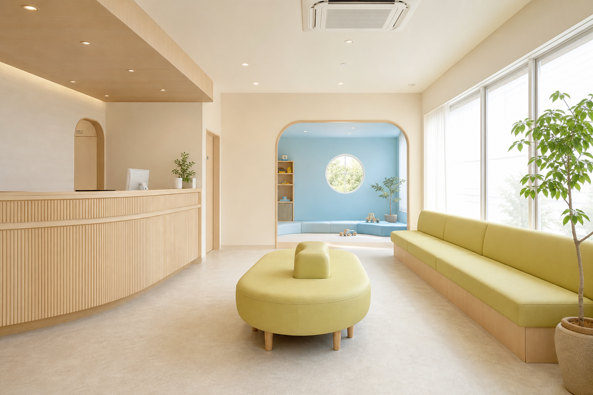
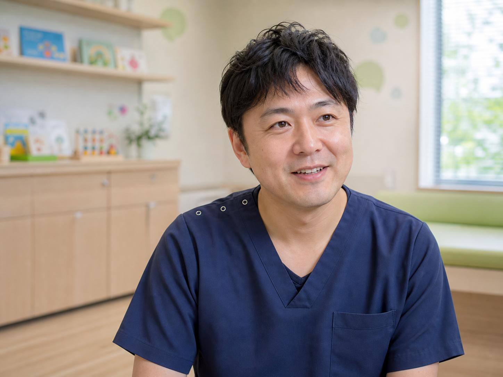
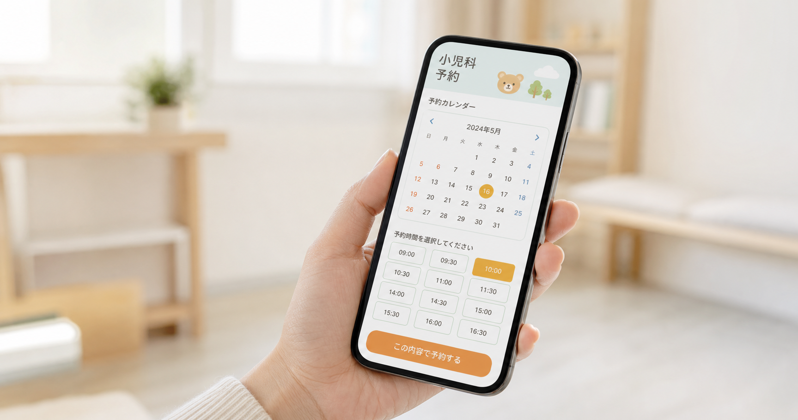

丁寧でわかりやすい診療
お子さまの様子をじっくり伺い、診断やお薬について、できるだけわかりやすい言葉でご説明します。
こどもの未来と、ご家族の安心のために。
小さな不安にも、やさしく耳を傾けるクリニックをめざします。
OUR PHILOSOPHY
お子さまの体調や成長について、気になることを何でも話せる場所でありたい。症状だけを見るのではなく、ご家族の不安や生活背景にも目を向け、わかりやすく丁寧な診療を心がけています。
地域の皆さまと一緒に、お子さまの健やかな未来を見守ってまいります。

THREE PROMISES
安心して相談できる、あたたかな小児科であるために。
お子さまの様子をじっくり伺い、診断やお薬について、できるだけわかりやすい言葉でご説明します。
病気のときだけでなく、健診や予防接種、発達・子育てのご相談を通して継続的に成長を支えます。
育児の心配ごとや迷いにも耳を傾け、ご家族が少し安心して帰れる診療を大切にしています。
OUR FEATURES

自然光が入るやさしい色合いの空間です。ベビーカーでも移動しやすい、ゆとりある動線を整えています。

お子さまの年齢や発達段階に合わせ、怖さや緊張にも配慮しながら丁寧に診察します。

スマートフォンから24時間受付。院内での待ち時間をできるだけ短くできるよう工夫しています。
ことば、行動、園や学校での様子など、病気以外の気がかりも気兼ねなくご相談ください。
GREETING
院長 山田 太郎
子どもたちが元気に成長していく姿は、ご家族にとって何よりの喜びです。その一方で、突然の発熱や長引く咳、成長についての心配など、子育てには不安がつきものです。
これまで小児科医として培ってきた経験を生かし、地域の皆さまが安心して頼れる身近なクリニックをつくりたいと考え、姪浜に開院しました。どんな小さなことでも、どうぞ気軽にお話しください。
CLINIC PROFILE
| 医院名 | 姪浜みらいこどもクリニック |
|---|---|
| 院長 | 山田 太郎 |
| 診療科目 | 小児科・アレルギー科・予防接種・乳幼児健診・発達相談 |
| 所在地 | 〒819-0005 福岡県福岡市西区内浜1丁目7-3 姪浜メディカルビル 2F |
| 電話番号 | 092-000-0000 |
| 休診日 | 日曜・祝日 |
急な体調不良や受診のタイミングなど、お電話でもご案内しています。